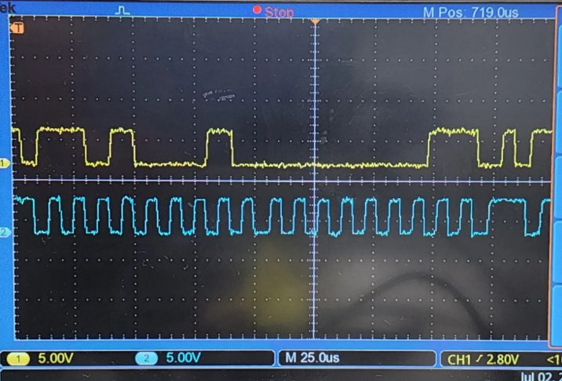

2026.07 · 팀 2인 (팀원별 개별 구현)
RTC 시계 + 계산기
RTC 시계 모드와 키패드 계산기 모드를 버튼으로 전환하는 장치
1. 프로젝트 개요
- 프로젝트명
- RTC 시계 + 계산기
- 수행기간
- 2026.06.29 ~ 2026.07.03
- 수행인원
- 2인 (팀 과제, 팀원별 개별 구현)
- 담당역할
- 전체 구현
- 사용 기술
- C, ATmega128A, DS1307(RTC), LCD1602(4비트), 4×4 키패드
- 링크
- GitHub
2. 개발 배경 및 목적
- 교육 과정 ATmega128A 과제
- 데이터시트 기반 I²C(TWI)·LCD 드라이버 작성 학습
3. 개발 목표
- DS1307 RTC 시간 표시
- 4×4 키패드 사칙연산 계산기
- 버튼으로 시계·계산기 모드 전환
4. 주요 구현 내용
4.1 I²C(TWI) 마스터 드라이버
- TWI 레지스터(TWCR·TWSR)로 START / STOP, 주소·데이터 송수신
- 단계마다 상태 코드 확인
- DS1307의 BCD 값 10진 변환, 시(hour) 레지스터 상위 비트 마스킹으로 24시간제 처리
4.2 LCD 4비트 드라이버
- 한 바이트를 상·하위 니블로 나눠 전송
- 갱신이 필요할 때만 화면 다시 그림
4.3 키패드 및 계산기
- Timer0 1ms 인터럽트에서 60ms마다 키패드 스캔, 원형 큐 저장 (빠른 입력 유실 방지)
- 중위 → 후위 표기 변환 후 스택으로 계산, 잘못된 수식은 오류 표시
5. 문제 해결
5.1 LCD 초기화 실패
- 문제
- LCD 화면 미표시
- 원인
-
- 데이터선 8가닥(DB7~DB0) 중 4가닥(DB7~DB4)만 연결하는 4비트 방식 사용, 1바이트를 니블 두 번으로 나눠 전송
- LCD는 전원 투입 직후 8비트 모드 상태라 4비트 전환 명령을 니블 1회로 받아야 하나, 1바이트 전송 함수가 니블 두 개를 보내 의도하지 않은 값 삽입
- 데이터시트 최소 대기 시간만 적용해 실제 회로에서 부족
- 해결
- 전환 명령을 0x02로 구성해 0000, 0010 두 니블이 차례로 전달되도록 수정, 대기 시간 여유 확보
5.2 LCD 화면 갱신 멈춤
- 문제
- 동작 중 LCD 화면 갱신 멈춤
- 원인
- 메인 루프마다 변경 여부와 관계없이 LCD 2행 전체를 다시 출력, 문자당 2ms 대기로 루프 대부분을 LCD 출력이 차지
- 해결
- 화면 갱신 플래그(
lcd_update_flag) 추가, 시각 읽기(1초)·키패드·버튼 입력 시에만 플래그를 세워 변경이 있을 때만 출력
6. 결과
- 시계 표시, 계산기 입력·계산, 모드 전환 동작


장치 / I²C 신호 측정
7. 느낀 점
- 데이터시트의 타이밍과 프로토콜을 코드로 옮기며 통신 드라이버를 레지스터 수준에서 이해